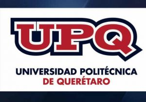

Nuestros objetivos son: Analizar los fundamentos de la Industria 4.0 y su adaptación en los procesos de manufactura. Reconocer los beneficios de la Industria 4.0 y selecciona la técnica de implementación adecuada considerando diversos escenarios.
Proponer diferentes modelos de negocios, utilizando las metodologías de la industria 4.0 para diseñar estrategias.
Universidad Politécnica de Querétaro

La UPQ es una institución pública de educación superior que genera y difunde conocimiento, aporta capital humano como agente de cambio, coopera al desarrollo social, productivo, económico y tecnológico e impulsa la competitividad en un contexto global que contribuye al bienestar y desarrollo armónico del alumno y la sociedad, mediante la formación profesional integral, a través de un modelo educativo pertinente basado en competencias, centrado en el aprendizaje, vinculado al sector productivo con un equipo humano altamente capacitado y comprometido con la institución y su vocación de servicio.
ALINNCO
La maestría en Ingeniería de Manufactura que se diseñó e implementó en ALINNCO cubrirá el conocimiento asociado al diseño y desarrollo del producto y procesos, así como el modelado matemático de los mismos para permitir la mejora en su eficiencia y operación.
Este programa a su vez está pensado para ofrecer al estudiante un ecosistema educativo diferente y enriquecedor al compartir y departir clase con empleados de otras industrias lo que facilitará la transferencia de experiencias y la solución práctica de problemas afines.
UNIVERSIDAD AUTÓNOMA
DE NUEVO LEÓN
En sintonía con el esfuerzo del Estado de Nuevo León y acorde a la Visón 2030 de la UANL, sustentada en el compromiso de formar profesionales, maestros universitarios e investigadores, así como de contribuir al desarrollo científico y tecnológico como motores de la transformación, la UANL lanzó la iniciativa UANL 4.0 en agosto de 2017, con el objetivo de apoyar a la industria y sociedad neolonesa para la adopción, implementación y desarrollo de las tecnologías claves para la industria 4.0.
Actualmente la UANL, oferta los siguientes programas de estudio alineados a la iniciativa Nuevo León 4.0:
Especialidad en Ingeniería de Industria Inteligente